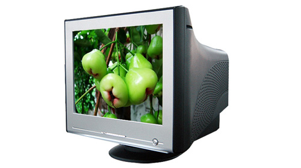

CRT МОНИТОРИ
CRT (Cathode-Ray Tube) - Монитори с електронно-лъчева тръба. Електроните биват "изстрелвани" през вакуумирана стъклена тръба върху екрана, където те активират точки или линии,
изградени от червен, зелен и син фосфор. При избор на CRT монитор са налице три основни фактора, които определят неговите възможности:
- dot pitch - разстоянието между две точки с еднакъв цвят: червен, син или зелен
- маскимална резолюция
- честота на опресняване
